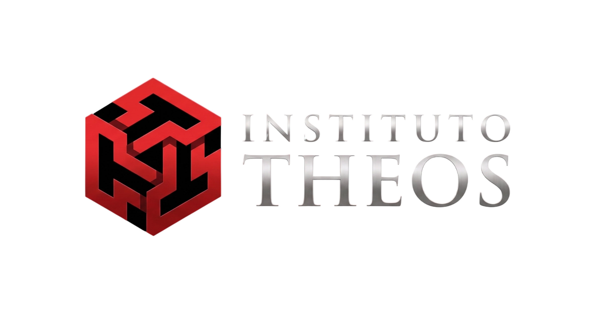

O Instituto Theos nasceu para ser a ponte entre o conhecimento teológico profundo e a vivência ministerial diária, transformando alunos em verdadeiros discípulos.
Fundado em 2026, na cidade de Ituverava-SP, o Instituto Theos (ITT) é fruto da visão da Igreja Metodista, ligada à Quinta Região Eclesiástica.
Não somos apenas mais uma instituição teológica genérica. Nascemos da necessidade de um ensino profundo que fale a linguagem da igreja local, da família e da sociedade, aliando Ortodoxia a Ortopraxia.
Nosso compromisso inegociável é com a excelência acadêmica pautada em um profundo compromisso com as Escrituras e com a Tradição Cristã Wesleyana.
"Não é sobre teoria vazia. É sobre viver e comunicar o Evangelho com fidelidade e relevância na geração atual. Evolua na Palavra, cresça no serviço."
Promover a formação teológica e pastoral de excelência, capacitando líderes e fiéis para o exercício ministerial e evangelístico fundamentado nas Escrituras.
Ser um centro de referência em educação teológica, reconhecido por sua solidez doutrinária e pela capacidade de transformar vidas por meio do ensino.
A estrutura dos nossos cursos foca nos eixos primordiais do desenvolvimento espiritual, pastoral e intelectual do cristão.
Compreensão aprofundada dos textos sagrados, hermenêutica e exegese bíblica.
Estudo doutrinário e apologético das principais frentes da fé cristã.
A história da Igreja, os pais da fé e os movimentos de reforma e avivamento.
Aconselhamento, homilética, missões e desenvolvimento de liderança pastoral.